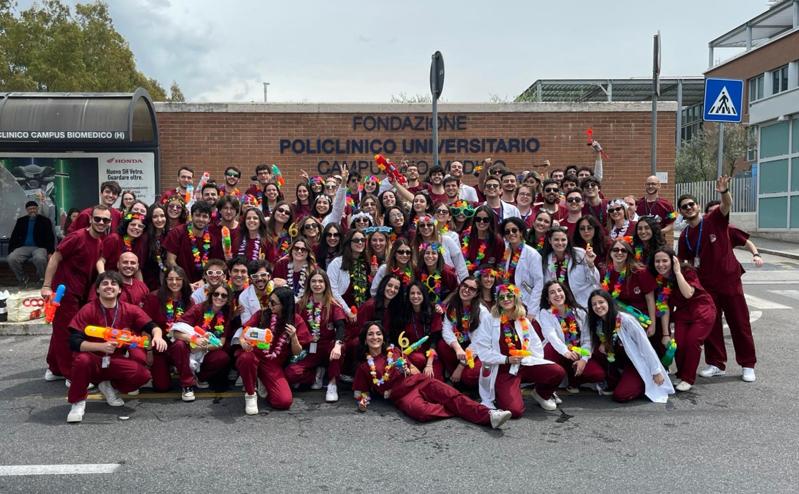

Cinque cellulari per il qr code
Prof io non ci sarò
Che confusione il gaudio
È quasi peggio di pato con Fazio
Carotti sai ha un non so che di sadico
C’è un non so che, un non so che di brivido
Dimmi quando arrivi così ti tengo il posto
Sblocco già l’ipad il tuo pin lo conosco
Entra che ho lasciato il tuo zaino all’ingresso
Tanto in aula un’ora non resto
Anche se Roma-Trigoria mi sembra infinita, mi accollo sei anni ma non tutta la vita
Ti giri un momento, il sito è crushato
E manco mi so prenotato
Paga retta, mamma striscia carta
Passa passa passa la sbobina
Poi l’alloni spilla e tutina
Tanto lo sai non la metto, la scordo ogni mattina
Mi accollo sei anni ma non tutta la vita
Dicevan tutti che si copia ortopedia
Neanche te ne accorgi, ferragosto e Papalia
Soffriamo tutti un po’ con
Borzomati a chirurgia,
Già psimc é una tortura, pure al sesto che follia
Vedo nei tuoi occhi quello sguardo che conosco
Il salto dell' appello sicuro ci ricasco
Fidati che keller lo ricordi fino al sesto
Sodio potassio e il ratto del deserto 🐁
Con Antonelli all’esame tortello e bronchite,
non farti ingannare, “parliamo della miosite”
Ti giri un momento, Ciccozzi è tornato,
l’aereo sarà decollato?
Paga retta, mamma striscia carta
Scatta scatta borghi fa una foto
Questa fila a mensa é infinita,
Tanto lo sai non aspetto, Cesa tutta la vita
Nononono senti un brivido
Non pensarci no solo vivilo
Fino a che si può fino all’ultimo
Tanto lo sai che vi porto con me tutta la vita
Anche se Roma-Trigoria mi sembra infinita, mi accollo sei anni ma non tutta la vita
Ti giri un momento la laurea é vicina,
I parenti già stanno piangendo, 😭
Dammi retta, viceré ti aspetta
Gira gira girerà la testa,
Non ci credo è quasi finita,
Tanto si sa che è per sempre, campus tutta la vita 🧡
